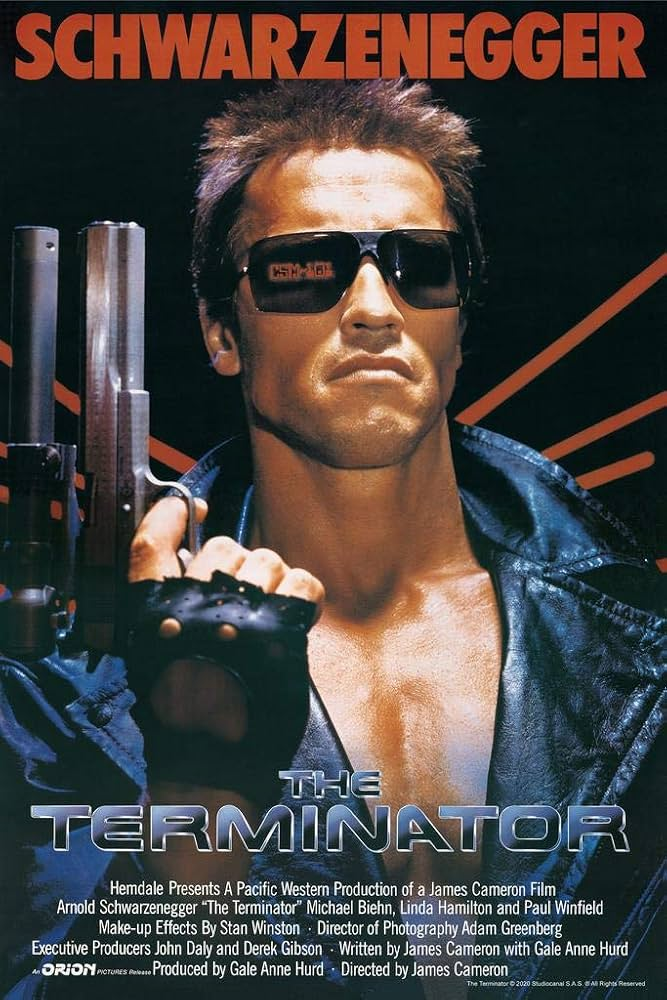
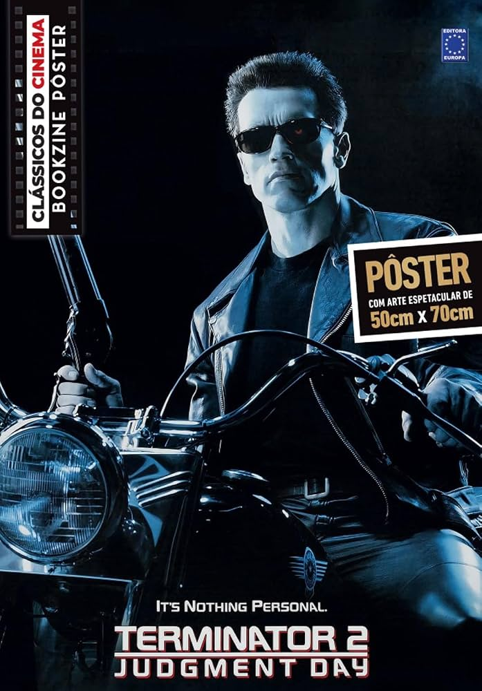
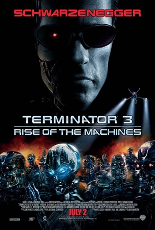
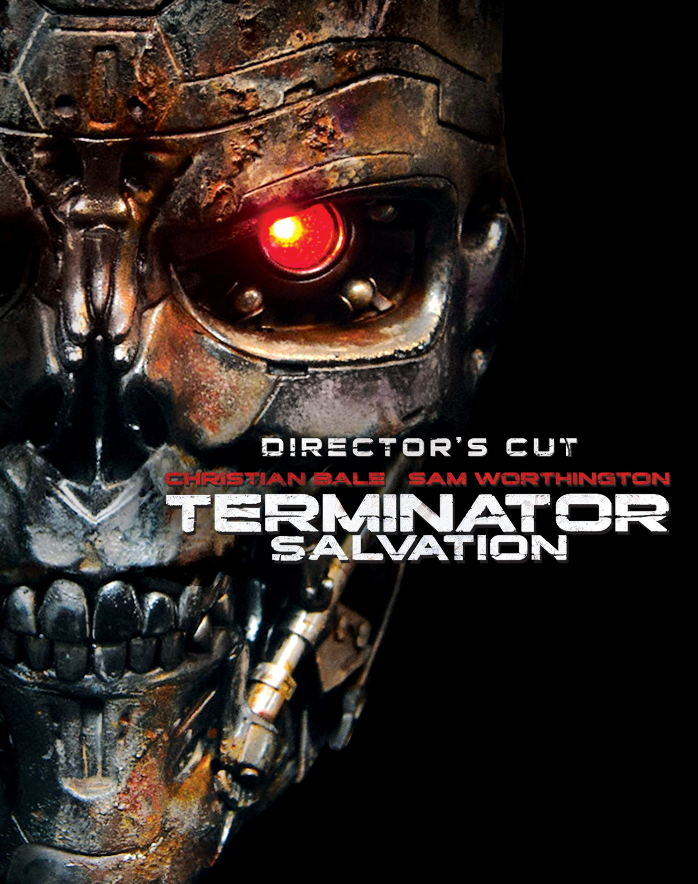

01
O Exterminador do Futuro
Uma ameaça do futuro chega ao passado para mudar o destino da humanidade.
A saga em ordem de lançamento
Seis capítulos de uma guerra entre humanos e máquinas. Veja a trajetória completa da saga.

Uma ameaça do futuro chega ao passado para mudar o destino da humanidade.

Uma nova máquina implacável coloca o futuro de John Connor em risco.

O Dia do Julgamento se aproxima e a guerra parece inevitável.

No futuro devastado, a resistência humana enfrenta as máquinas.
Uma mudança na linha do tempo reescreve o começo da batalha.
Uma nova ameaça surge, e aliados precisam lutar por outro futuro.